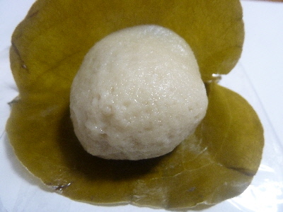
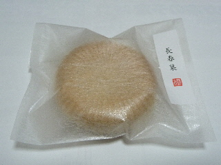
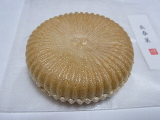
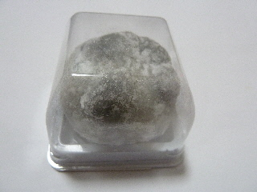
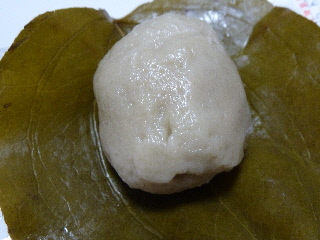
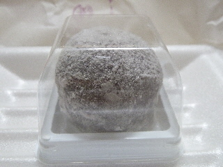
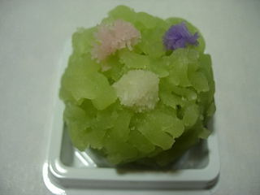
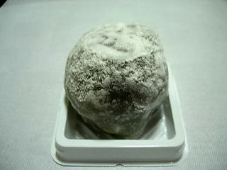

長春堂の麩まんじゅう
2017/10/13
しっかり弾力がある麩まんじゅうでした。

お麩の感じが強くていいですね。
お麩の量も多目なので、麩を食べったって感じがしました。
普通のおまんじゅうとはまた違った味で美味しかったです。
島根県出雲市今市町515-4
2017/10/13
しっかり弾力がある麩まんじゅうでした。

お麩の感じが強くていいですね。
お麩の量も多目なので、麩を食べったって感じがしました。
普通のおまんじゅうとはまた違った味で美味しかったです。
2014/12/13

ちょっと高級感のあるパッケージですね。
単品売りの最中です。
160円+税です。

中にはやわらかい粒あんが入っていました。
やわらかい粒あんなので小豆味がしそうなんですが、しっかりとした甘さがありました。
ちょっと意外な味でした。
2013/12/21
大福に黒豆が入った黒豆大福です。

餅の部分がとってもモチモチとした大福でした。
黒豆って大福に入ると餡に負けちゃいますね。ほんのり黒豆味がする感じかな。
黒豆に合わせてか、塩味が効いてました。
2013/06/24
麩まんじゅうを久々に食べました。

ここの麩まんじゅうは、麩がしっかりしてますね。
生麩らしく、とってももちもちしていました。
味も、しっかりお麩の味がしました。
お麩の中には、なめらかな餡が入っていて美味しかったです。
2011/05/08
もう5月なので、中に入っている苺が甘いですね。

ここのは苺とアンが多目なので、甘さが強くなっていました。
個人的には、苺大福の苺はみずみずしくて、爽やかな感じが好きかも？って思いました。
2008/4/23

きんとんの中には粒アンが入っているんですが、それが美味しかったです。
甘納豆っぽい感じで、お豆のいい味がとても強く出てました。
いい味ですね。
2008/2/7
小さいし色も黒いのでちょっと苺大福に見えないですが、ちゃんとイチゴがまるまる1個入った苺大福です。

大福の生地と餡の層が薄いので、苺のみずみずしい甘さが強く、スッキリとしていて美味しかったです。
ここまで苺の味が強い商品はなかなかないですね。苺以外のところを工夫した商品がよくありますけど、これは苺自体の味を引き出す感じの商品ですね。